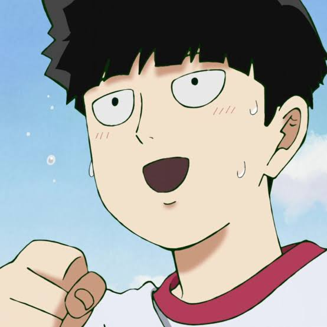
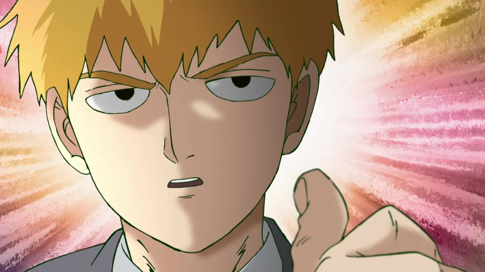
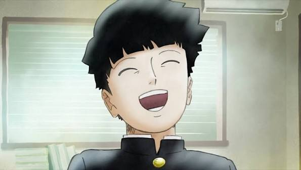

Shigeo Kageyama, conocido como Mob, es el protagonista de Mob Psycho 100. Es un estudiante de secundaria que posee enormes poderes psíquicos, como la telequinesis. A pesar de su gran poder, intenta llevar una vida normal, mejorar como persona y aprender a controlar sus emociones. También trabaja como asistente de Arataka Reigen, quien se convierte en su mentor y figura de guía.

Mob vive con sus padres y su hermano menor, Ritsu Kageyama. Ritsu es muy inteligente y, aunque al principio siente cierta admiración y conflicto con los poderes de Mob, ambos tienen una relación cercana como hermanos. Sus padres aparecen poco en la historia, pero mantienen una relación familiar estable. Reigen Arataka no es parte de su familia, pero tiene una gran importancia en su vida como mentor y amigo.

Mob tiene una apariencia sencilla: cabello negro con un corte en forma de tazón y suele vestir su uniforme escolar. Es una persona tranquila, tímida y reservada, pero también amable y considerada con los demás. No busca presumir de sus poderes y prefiere resolver los problemas sin depender de ellos. A medida que avanza la historia, aprende a expresar mejor sus emociones, ganar confianza y comprender quién quiere ser.
